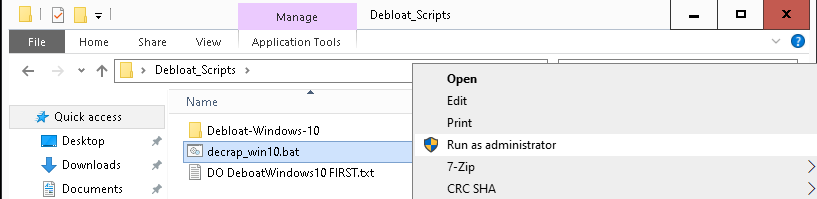

About
You can download the Debloat Scripts folder here.
Link to TronScript.
Link to Windows 10 Minimizer Utlity.
0.Basic Stuff
Let us get some basics out of the way. Open File Explorer and go to Computer.
Right-click and click Properties

It will open Basic Information abou your computer.
Click on Advanced system settings

A windows called System Properties will show up.
Under Performance click Settings...

A windows called Performance Options will appear.
Click Adjust for best performance

1.Sripts
After you have downloaded the Debloat Scripts RAR file you need to extract it.
The foler content should look something like this.

Open the Debloat-Windows-10 folder.
Open the only text file in there and copy the command in it.
Open Powershell as administrator.

A window looking like this should pop up.

Copy the folder location just like i do in the picture below.

Go into the directory using the cd command like shown.

Next copy the command from the text file and Right-click to paste in into Powershell.

Hit enter and enable execution for all files.
To execute the scripts you have to write a "dot" and a "foward slash" followed by the files name.
Just follow the picture and execute the rest of the scripst like that.

After you have run the scripts go back to the Debloat Scripts folder.
Right-click the decrap-win10.bat file and run as admin.

Whith the scripts done lets get going onto the next step.
2.System Configuration
Open System Configuration (msconfig) as administrator.

A window looking like this should pop up.
Go to boot, check No GUI Boot and Click on Advanced options...

A window named BOOT Advanced Options should appear.
Check Number of processors and select the highest value available.

Next go to Services and disable the following services.
Bluetooth Audio Gateway Service
Windows Insider Service
BitLocker Drive Encryption Service
Fax
Windows Font Cache Service
Smart Card
Smart Card Device Enumeration Service
Smart Card Removal Policy
Sensor Monitoring Service
Telephony
WMI Perfomance Adapter
Windows Update
Windows Defender Antivirus Service
Security Center
Superfetch
Xmox Accessory Service
To disable them just untick them.
3.Windows Features
Open Control Panel.

Click on Programs and Features

Click on Turn Windows features on or off

Change the features to these settings.

4.Services
Open Services as administrator.

Change the following to disabled by Right-clicking and Properties and change Startup type to Disabled.

5.TronScript
Right-click the downloaded Tron execuatable and click Run as administrator.

It will create a folder called tron.

Open the tron folder and run tron.bat as administrator.
After launchin it will show a few lines and then a red screen will appear.
Just type "I AGREE" as shown.

Once you hit enter you will have to wait for about 7-9 hours depending on your system.
6.Optimize Windows Update for security updates only
Open your Local Policy editor (Start - Run) and type gpedit.msc
From this screen go to Computer - Administrative Templates - Windows Components - Windows Update - Windows Update for Business
Now set the Feature Updates to the following
For Quality Updates, I recommend deferring those 4 days.
7.Conclusion
After all of this you should now have a much faster computer then before.
You do not have to deal with updates or slowdowns anymore.
Also we have disabled the windows telemetry and spying mechanism of the os.
A way you can check is by opening Task Manager and click performance.
With no apps running you should see noo network activity. Just like it should be.
Hope this helpped. Make sure to subscribe to my channel.
And check out the video for more details.